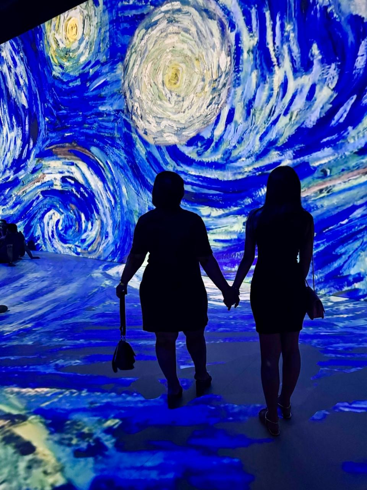

Para o meu sol,
sob todas as estrelas.
Fiz este pequeno lugar pensando em você, nas nossas lembranças e em tudo aquilo que nem sempre consigo dizer direito.

Uma lembrança nossa, guardada com carinho. 💙
Entre tantas cores, eu guardo nós duas.
Eu gosto dessa foto porque ela me lembra que a nossa história é feita de momentos reais: dias bonitos, dias difíceis e lembranças que continuam tendo valor.
Naquele instante, estávamos de mãos dadas diante de um céu cheio de movimento e cor. Hoje, quando olho para essa lembrança, só consigo pensar no quanto você é importante para mim.
Meu sol, preciso te dizer…
Eu sei que não estamos vivendo os nossos melhores dias. Sei que temos brigado muito e que algumas das minhas atitudes te machucaram. Não quero usar esta carta para justificar meus erros ou pedir que você simplesmente esqueça o que aconteceu.
Quero reconhecer que preciso melhorar. Quero aprender a te ouvir de verdade, respeitar seus sentimentos, conversar com mais calma e não deixar que meus medos ou minhas reações acabem machucando alguém que amo tanto.
Eu sinto saudade da nossa leveza, das risadas, das pequenas coisas e da tranquilidade de simplesmente estarmos juntas. Sinto saudade, mas também quero construir novas lembranças — não fingindo que nada aconteceu, e sim aprendendo com o que precisa mudar.
Eu te amo e ainda quero lutar por nós. Mas quero aprender a fazer isso da maneira certa: sem transformar amor em cobrança, sem esperar que palavras resolvam tudo e sem esquecer que você também tem limites, sentimentos e dores que merecem cuidado.
Não posso prometer ser perfeita. Posso, porém, assumir a responsabilidade pelas minhas atitudes e me esforçar para que a mudança apareça nelas, dia após dia. Sei que confiança e tranquilidade são construídas com tempo e constância.
Você é muito importante para mim. Nossa história não se resume às dificuldades que estamos enfrentando, e eu guardo com carinho tudo o que vivemos. Não espero que esta carta resolva tudo de uma vez. Só queria que você pudesse conhecer um pouco melhor o que existe no meu coração.
Com todo o amor que sinto por você. 💙
Se você quiser, descubra uma por vez.
🌻 Meu sol
É assim que eu te chamo porque esse apelido é seu no meu coração. Você tem um lugar na minha vida que não se parece com o de ninguém.
🖼️ Nossa exposição
Uma das coisas que quero guardar é a lembrança de nós duas vivendo juntas algo que já tem um significado tão bonito para a nossa história.
✨ O que eu desejo
Mais conversas tranquilas, mais risadas, mais cuidado, mais respeito e espaço para que as duas possam ser ouvidas.
💌 O que eu assumo
Não quero que você precise acreditar apenas no que escrevo. Quero que minhas atitudes, com o tempo, mostrem o que estou disposta a fazer diferente.
Tem mais uma coisinha para você.
Toque no botão quando se sentir pronta. Não precisa ter pressa. 💛
Meu sol, em uma pintura como a de Van Gogh, o céu parece estar sempre em movimento. Há luzes, redemoinhos e partes que se encontram sem serem iguais.
Talvez a vida também seja assim. Eu não quero romantizar os nossos momentos difíceis nem achar que o amor sozinho resolve tudo. Quero aprender a cuidar melhor do que temos, se você também quiser construir isso comigo.
Obrigada por fazer parte da minha história e por todas as lembranças que dividimos. Você continua sendo alguém muito especial para mim. 🌻
Para você, meu sol.
Que a gente encontre mais delicadeza na forma de conversar, coragem para reconhecer os erros e cuidado para escolher o que fazer daqui para frente.
Com amor, de mim para você. 💙